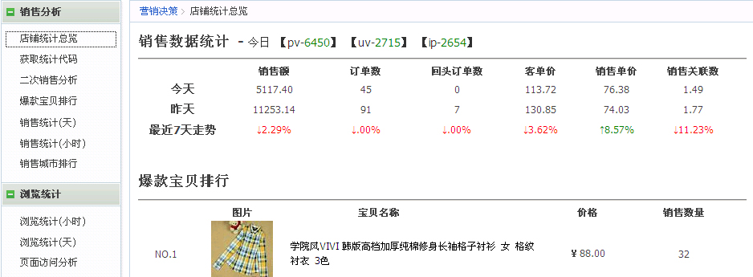
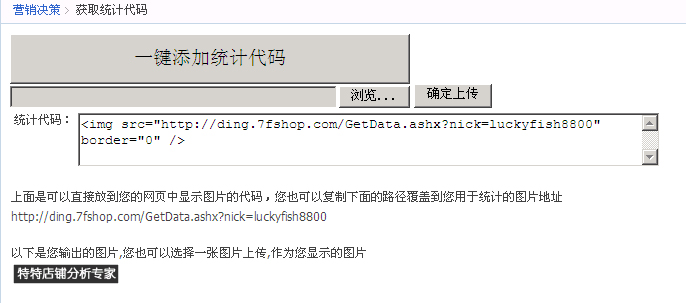
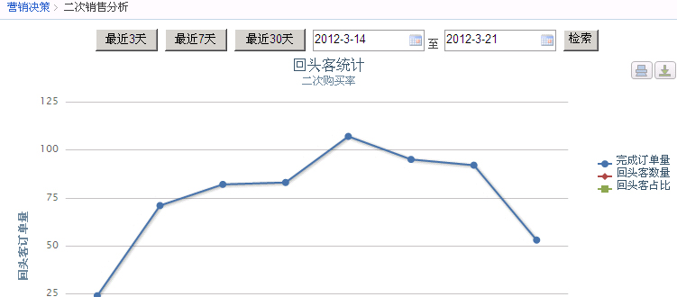
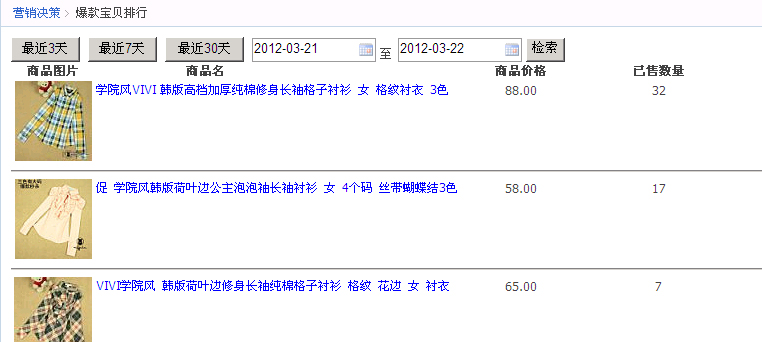
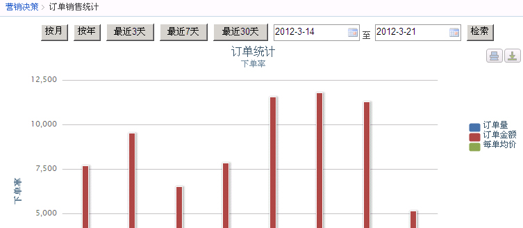
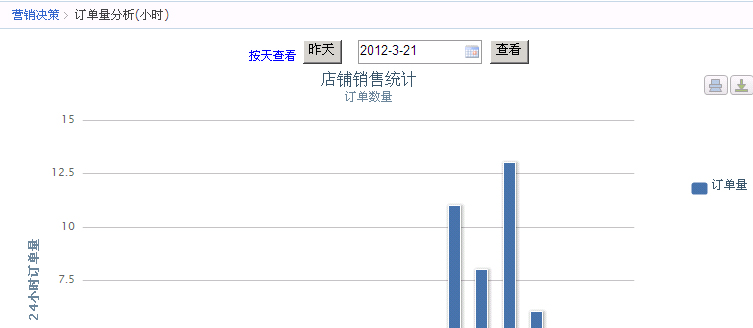
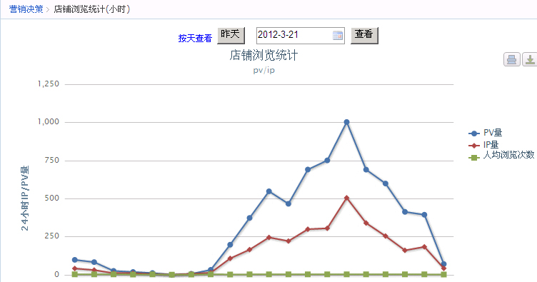
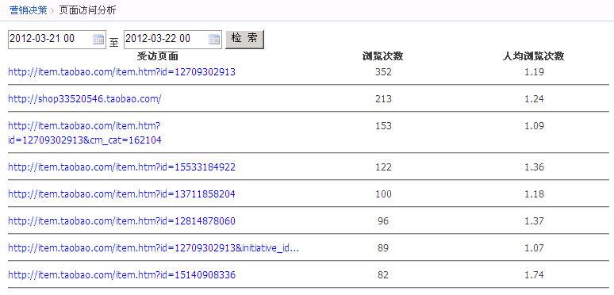
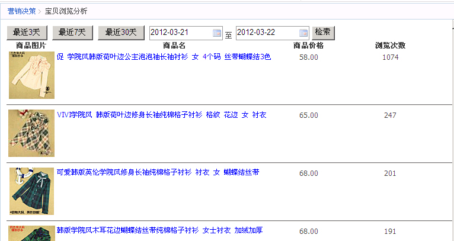
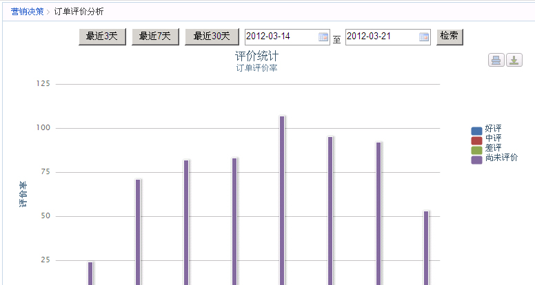

1、店铺统计总览-您可以在这里看到店铺最近的销售走向

2、获取统计代码-您可以在这里把统计代码一键加入到您的店铺里

3、二次销售分析-通过对您订单的促销信息进行分析，可以得出您的二次销售情况

4、爆款宝贝排行-分析您的店铺里面哪件宝贝为目前的爆款，要好好利用哦

5、销售统计（天）-按照天来统计您的销售情况

6、销售统计（小时）-按照小时来统计您的销售情况

7、销售城市排行-看看您的产品在哪个城市卖的最好，可以根据此数据做一些特殊的促销活动哦
8、浏览统计（小时）-统计您店铺的浏览数据，按照小时来统计

9、浏览统计（天）-统计您的店铺的浏览数据，按照天来统计

10、页面访问分析-看看您哪些页面被访问的最多，可以有效的查看推广效果哦

11、宝贝浏览分析-看看您哪件宝贝被浏览的次数最多

12、评价分析-通过图表的形式分析您的店铺评价走向，看看是不是售后工作做的不到位哦
